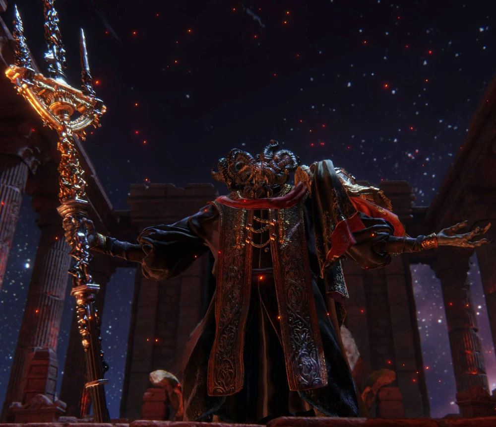
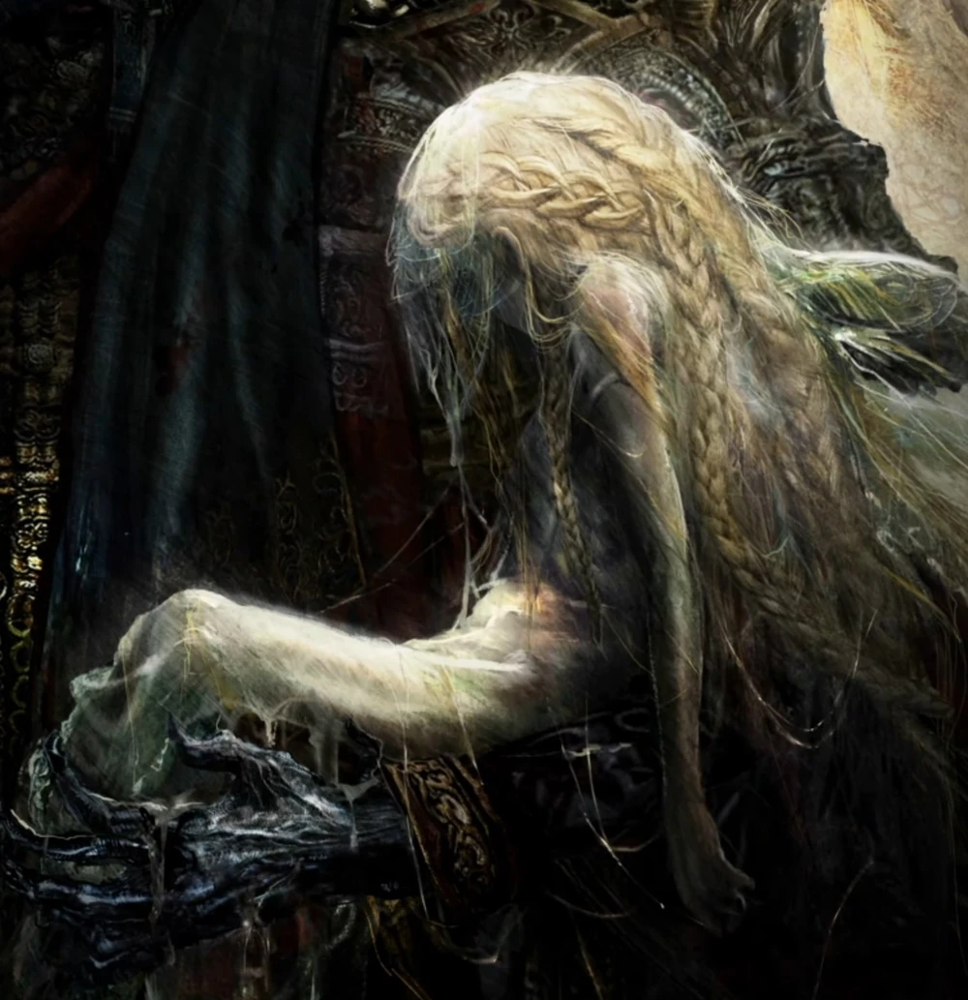

What is Elden Ring
"Elden Ring" is an action role-playing game developed by FromSoftware and published by Bandai Namco Entertainment.
It was released in February 2022.
The game is a collaborative project between Hidetaka Miyazaki, the creator of the acclaimed "Dark Souls" series,
and George R. R. Martin, the author of "A Song of Ice and Fire" series, which inspired the TV show "Game of Thrones."
Set in a vast and interconnected open world called the Lands Between,
"Elden Ring" combines FromSoftware's signature challenging gameplay with an expansive and lore-rich universe.
Players can explore diverse environments, battle formidable enemies, and engage in intense combat encounters.
The game features a deep and intricate narrative, with a focus on exploration, discovery, and player-driven storytelling.
"Elden Ring" has received praise for its challenging gameplay, atmospheric world design, and collaborative storytelling elements,
making it a highly anticipated and well-received title in the action RPG genre.
Story
Prologue
Long ago, in The Lands Between,
Queen Marika became a vessel for the Elden Ring. And so, in the name of the Erdtree,
Marika conquered the Lands with the aid of her husband Godfrey — a mighty warrior
and first Elden Lord — who fought alongside his warriors in the name of the Queen
until his very last worthy enemy was defeated and Marika's reign was absolute.
Marika removed the Rune of Death from the Elden Ring and commanded her loyal shadow, Maliketh, to seal it away.
Thus, she and everyone blessed by her Grace would live forever, granting her the title of Queen Marika the Eternal.
However, this very same Grace was taken away from Godfrey and his army, whom she instructed to wage war and die abroad,
with the promise that life and Grace would be returned to them when needed.
All those who were stripped of their Grace, as well as their descendants, became known as the Tarnished.
True to Marika's promise, their Grace was returned to them after their deaths,
and they were called back to the Lands Between to repair the shattered Elden Ring.
Will the new Tarnished heed the call, or perish and be forgotten?
Game events
Queen Marika the Eternal is nowhere to be found, and Grace has revived many Tarnished to seek the Elden Ring, the player among them.
They will travel the Lands Between in hopes of becoming Elden Lord and reigning over a new era, should they surmount the challenges that await,
with the help of a vast assortment of weapons, spells, armors, and items,
to level a fight, and by adjusting the stats and attributes to decide proficiency and means of survival.
Shardbearers
Shardbearers are special Bosses that are key to the progression of Elden Ring.
Defeating them will reward the player a Great Rune.
In order to progress the story,
one Great Rune is required to be granted an audience with the Two Fingers in the Roundtable Hold,
and two are required to access to Leyndell, Royal Capital.
At least three shardbearers must be defeated by the player in order to achieve an ending.
Godrick the Grafted

Godrick is a descendant of the Golden Lineage, the bloodline which began with Queen Marika the Eternal and her first consort Godfrey.
Only a distant relation of Marika's line, his divine blood was sorely diluted, and he was viewed as the runt of the litter.
After the Elden Ring was shattered, Godrick inherited the Great Rune from the centre of the Elden Ring,
referred to as the anchor ring. During The Shattering, Godrick was hounded from the Leyndell, Royal Capital.
He claimed a multitude of treasures, including the Mimic's Veil, and then hid amongst the womenfolk to flee the city.
Rennala, Queen of the Full Moon

As a young astrologer who gazed at the night sky and always chased the stars,
Rennala would encounter an enchanting full moon that would one day bewitch the Academy of Raya Lucaria.
In her youth, she was a prominent champion who charmed the academy with her lunar magic, becoming its master.
She established the house of Caria as royalty, and also led the Glintstone Knights.
These Carian Knights were heroes of the highest honors, anointed by the Lunar Queen,
and despite numbering fewer then twenty, their power made them a match for even the champions of gold in battle.
Rykard, Lord of Blasphemy
Rykard was born the son of Radagon, a champion of the Erdtree, and Queen Rennala,
head of both the Carian Royal Family and the Academy of Raya Lucaria.
He had two siblings, Radahn and Ranni.
At some point during the Shattering, Rykard fed himself, Great Rune and all, to the blasphemous serpent that dwelled on Mt. Gelmir,
an ancient traitor to the Erdtree, merging with the creature.
In the final moments before being devoured, he briefly had a vision of the future wherein he witnessed a serpent devouring the world.
Following this, his lofty ambition degraded into gluttonous depravity.
He fed on his greatest champions, and in the bowels of the serpent, they became the lord's family.
Disturbed by what had become of their master and by the costly battles waged in his name,
Rykard's forces abandoned him.
Some attempted to put him to rest by searching for a mighty weapon capable of killing their lord.
Such a weapon was found in the Serpent-Hunter,
an enchanted spear crafted to hunt an immortal serpent in the distant past.
However, all attempts made to take his life failed.
The spear would come to reside in Rykard's chambers,
left by a former Recusant who hoped a worthy champion might one day appear to weild it and spare the once-noble Rykard from further dishonor.
Starscourge Radahn

Radahn was born the son of Radagon, a champion of the Erdtree, and Queen Rennala,
head of both the Carian Royal Family and Academy of Raya Lucaria. He had two siblings, Rykard and Ranni.
Radahn inherited his father's flaming red hair, and was fond of its heroic implications.
From a young age, he was enamored with the Elden Lord Godfrey.
Attempting to emulate his idol, Radahn adorned his armor with lions, the symbol of Godfrey.
From his stronghold of Redmane Castle in the Caelid Wilds,
Radahn led his armies against the forces of the other demigods.
By the end of the Shattering, only Radahn and his half-sister Malenia,
Blade of Miquella were the mightiest left standing.
The two fought to a stalemate in the Battle of Aeonia, which ended when Malenia unleashed her Scarlet Rot.
The Scarlet Rot ravaged Caelid, and consumed Radahn from the inside, eating away at his psyche.
Following the Battle of Aeonia, Radahn roams the Wailing Dunes as a mindless beast who devours the flesh of friend and foe alike, howling at the sky.
Without their commander,
the Redmane Knights burned the crest on the left breast of their armor to indicate their resolve to not return home, and to serve as a bulwark against the spread of the rot in Caelid using fire.
Morgott, the Omen King
Morgott was born of the Golden Lineage, the offspring of the first Elden Lord, Godfrey and Queen Marika, and was the twin brother of Mohg.
The twins were both born as accursed Omen, and as a result were confined to the Subterranean Shunning Grounds below the capital.
Because they were born of royalty, their horns were not excised.
Unlike his brother, Morgott would renounce his accursed blood and seal it away within a blade,
which was in turn concealed within a wooden staff he carried.
When Queen Marika shattered the Elden Ring, Morgott claimed one of the Great Runes.
With Leyndell in disarray, Morgott claimed the city for himself and defended it and the Erdtree against his fellow demigods.
While he succeeded in securing Leyndell, he found that the Erdtree would not admit him, or anyone else, to claim the title of Elden Lord.
Despite the fact that he had been reviled as an accursed fiend by the Golden Order, Morgott swore to protect the Erdtree.
He assumed the name Margit the Fell Omen during the Shattering, slaughtering champions who approached the Erdtree in the hopes of becoming Elden Lord.
Under this pseudonym, he also lead the Night's Cavalry, who assisted him in the killing of great warriors, knights and champions.
Simultaneously, he ruled Leyndell as the Veiled Monarch.
Mohg, Lord of Blood

Mohg, also known as the Lord of Blood, was born of the Golden Lineage, the offspring of the first Elden Lord, Godfrey and Queen Marika, and was the twin brother of Morgott.
The twins were both born as accursed Omen, and as a result were confined to the Subterranean Shunning Grounds below Leyndell.
Because they were born of royalty, their horns were not excised.
Unlike his brother Morgott, Mohg would embrace his Omen blood.
Deep underground, Mohg made contact with an Outer God known as the Formless Mother.
The Formless Mother ignited his accursed blood with fire, prompting him to develop powerful bloodflame magic.
After his mother shattered the Elden Ring, Mohg escaped his confinement and claimed one of the shards of the Elden Ring.
The extent of Mohg's involvement in the subsequent wars known as the Shattering is unknown,
but he assumed the title of Lord of Blood and began quietly recruiting followers from his lair deep below ground.
Malenia, Blade of Miquella
Malenia was born the child of Queen Marika the Eternal and her second husband, the Elden Lord Radagon.
She had an elder twin brother by the name of Miquella.
Both Malenia and Miquella were Empyreans, meaning they had the potential to one day replace their mother as a new god of a coming age.
But since Radagon and Marika were in fact the same person, Malenia and Miquella were born afflicted.
Malenia was afflicted with the Scarlet Rot, which ravaged her from within and would cost her several limbs, while Miquella was afflicted with eternal childhood, unable to ever grow into adulthood.
At some point, Malenia encountered a blind swordsman who had sealed away an Outer God of Rot.
The swordsman became her master, and trained her in the ways of the blade, allowing her to gain wings of unparalleled strength.
Malenia would eventually become a warrior without peer.
She would attract loyal servants like her Cleanrot Knights (who vowed to fight next to her despite the inevitable gradual putrefaction of their flesh), as well as worshippers, who believed her a goddess.
Members of House Marais, who were all sickly born, were naturally drawn to the beautiful and fierce Malenia who became such a powerful warrior in spite of being born into rot, and requiring prosthesis to fight.
Miquella of the Halightree

Miquella, like his twin sister Malenia, was born afflicted.
While Malenia was born with rot in her body, Miquella was cursed with the body of a perpetually young child.
The twins were very close, and Malenia would become her brother's sworn blade and protector, while Miquella worked tirelessly to try and undo the curses they had both been born into.
He made a promise to Malenia, who regarded him as the most fearsome Empyrean.
Miquella is said to be loved by many people, indeed he has the ability to compel affection from others.
As an Empyrean, Miquella was chosen by his own Two Fingers as a possible candidate to succeed Queen Marika as a new god of the coming age.
He was an adherent of the Golden Order fundamentalism, developing new incantations as gifts to his father Radagon.
However, Miquella would abandoned fundamentalism when he found out it was unable to treat Malenia's rot.
It was then that he began creating Unalloyed gold.
He used it to craft needles that could ward away the meddling of outer gods and thus forestall Malenia's incurable rot,
and would later even be used to subdue the power of the Frenzied Flame.
He would also unsuccessfully try to find a solution for his half-brother Godwyn and his state of incomplete death.
Ranni the Witch

Originally known as Lunar Princess Ranni, she was the daughter of Radagon, a champion of the Golden Order,
and Queen Rennala, head of both the Carian Royal Family and the Academy of Raya Lucaria.
She had two older brothers, Radahn and Rykard.
Ranni was also an Empyrean, meaning she had the potential to one day succeed Queen Marika as the divine ruler of the Lands Between.
The Two Fingers chose her as a potential successor and granted her a Shadow by the name of Blaidd to be her vassal.
He was approved of by Rennala, and was raised as her foster brother.
Ranni grew up playing with Blaidd, and they were often accompanied by Iji, a troll blacksmith who served the Carian royals.
Led by the hand of her mother Rennala, young Ranni would encounter her Dark Moon.
What she beheld was cold, dark and veiled in occult mystery.
Deep in the woods, she would also encounter a snowy crone, known simply as the "Snow Witch", who would go on to become her secret mentor.
She was an old witch well versed in cold-based sorceries, and she taught Ranni to fear the dark moon as she imparted her cold sorcery.
The full Dark Moon, cold and leaden, would become Ranni's sigil and symbol of her power and authority.